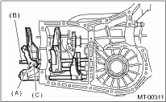

1. Apply grease to the plunger.
| ST 399411700 | ACCENT BALL INSTALLER |
2. Install the reverse arm fork spring, ball and interlock plunger to the reverse fork rod arm. Insert the reverse fork rod into the hole of the reverse fork rod arm, and hold it with snap ring (outer) using ST.
3. Position the ball, spring and new gasket in the reverse shifter rod hole on the left side of transmission case, and tighten the checking ball plug.
4. Install the 1st — 2nd fork rod into 1st — 2nd shifter fork through the hole on the rear of transmission case.
5. Align the holes in the rod and the fork, and drive the new straight pin into these holes using the ST.
NOTE:
• Set other rods to neutral.
• Make sure the interlock plunger is on the 3rd — 4th fork rod side.
| ST 398791700 | STRAIGHT PIN REMOVER |
6. Apply grease to the plunger.
7. Attach the interlock plunger on 3rd — 4th fork rod.
8. Attach the 3rd — 4th fork rod into 3rd — 4th shifter fork through the hole on the rear of transmission case.
9. Align the holes in the rod and the fork, and drive the new straight pin into these holes.
NOTE:
• Set the reverse fork rod to neutral.
• Make sure the interlock plunger (before installation) is on the reverse fork rod side.
| ST 398791700 | STRAIGHT PIN REMOVER |
10. Install the 5th shifter fork onto the rear of reverse fork rod. Align the holes in the two parts and drive new straight pin into the specified place.
| ST 398791700 | STRAIGHT PIN REMOVER |

|
(A) |
5th shifter fork |
|
(B) |
Reverse fork rod |
|
(C) |
Straight pin |
11. Position the balls, check ball springs and new gaskets into holes of the 3rd — 4th fork rods and 1st — 2nd fork rods, and install the plugs.
|
(A) |
5th shifter fork |
|
(B) |
Reverse fork rod |
|
(C) |
Straight pin |
12. Install the front differential assembly. 
13. Install the main shaft assembly.
Single-range model
Dual range model
14. Install the drive pinion shaft assembly.
15. Install the transmission case.
16. Install the transfer case together with the extension case assembly.
17. Install the back-up light switch & neutral position switch.
18. Install the manual transmission assembly to the vehicle.